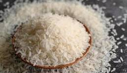

Home
Rice Recipe

Un arroz esponjoso y perfecto como acompañamiento, sencillo y rápido de preparar.
Ingredients:
- 1 cup of rice
- 2 cups of water
- 1 tablespoon of butter
- Salt to taste
Instructions:
- Rinse the rice under cold water until the water runs clear.
- In a medium saucepan, bring the water to a boil.
- Add the rice, butter, and salt to the boiling water.
- Reduce the heat to low, cover the saucepan, and simmer for 18-20 minutes, or until the rice is tender and the water is absorbed.
- Remove the saucepan from heat and let it sit, covered, for 5 minutes.
- Fluff the rice with a fork before serving.